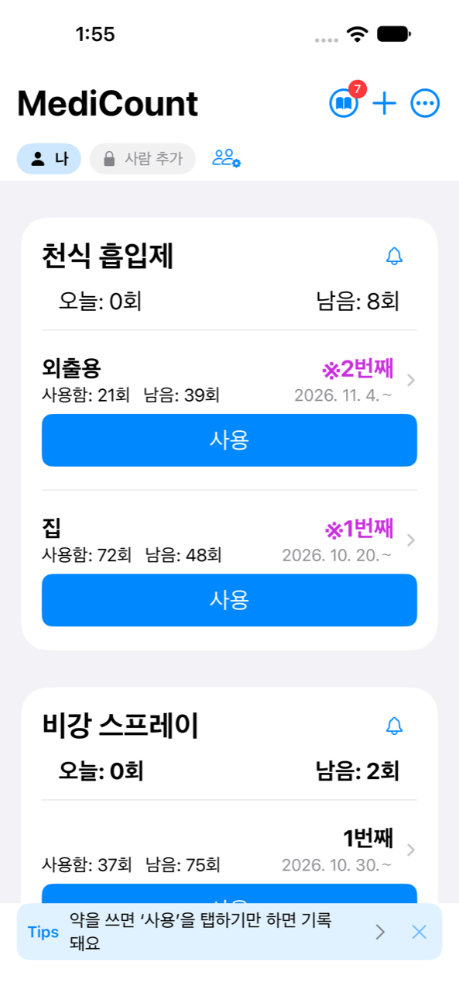
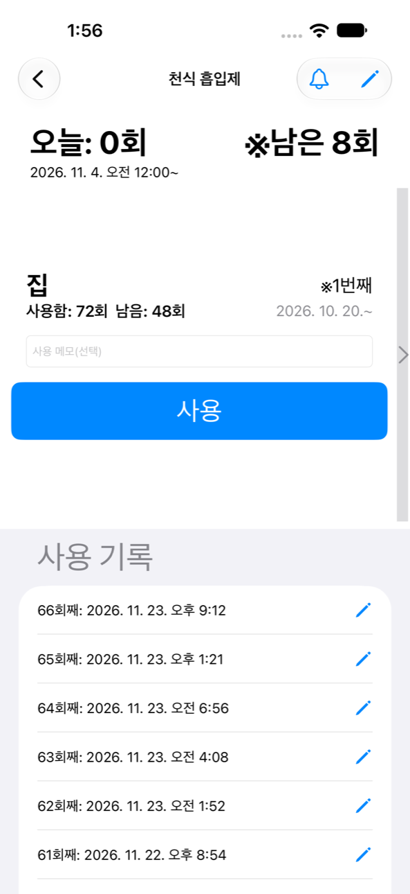

MediCount
흡입제·비강 스프레이의 남은 횟수 관리
꽃가루 알레르기·알레르기 비염·천식 등의 사용 횟수 카운트와 잔량 확인

흡입제·비강 스프레이의 남은 횟수 관리
꽃가루 알레르기·알레르기 비염·천식 등의 사용 횟수 카운트와 잔량 확인
2026년 11월 버전 3.02.00: 무료 백업과 iPad를 지원해요.
천식 흡입제나 꽃가루 알레르기·알레르기 비염 비강 스프레이처럼 남은 양이 표시되지 않는 약의 남은 횟수를 쉽게 관리하는 앱이에요. 카운터로 사용을 기록하고 남은 양을 한눈에 확인할 수 있어요.
기능: 약의 총 횟수와 사용 횟수를 입력하면 남은 횟수를 실시간으로 보여줘요.
장점: ‘앞으로 몇 번 쓸 수 있는지’ 늘 알 수 있어 약이 떨어질까 하는 불안이 사라져요.
기능: ‘사용’ 버튼을 탭하기만 하면 기록되고, 기록은 자동으로 저장돼요.
장점: 간단한 조작으로 기록 누락을 막고 정확한 잔량 관리를 도와요.
기능: 같은 약을 여러 개(예: 1번째, 2번째) 등록해 각각의 남은 양과 기록을 따로 관리해요.
장점: 여러 약을 정리하기 쉽고, 어느 약이 얼마나 남았는지 한눈에 알 수 있어요.
기능: 사용 일시와 메모를 기록하고, 필요하면 편집하거나 삭제할 수 있어요.
장점: 지난 사용 상황을 확인할 수 있어 의사와 상담하거나 치료 계획을 조정할 때 도움이 돼요.
기능: 사용 중인 약과 다 쓴 약을 나눠 보여주는 간단하고 보기 쉬운 디자인이에요.
장점: 누구나 쉽게 쓸 수 있어 매일의 복약 관리가 편해져요.
기능: 기록을 파일로 내보내고 나중에 불러올 수 있어요. 내보낸 파일은 암호화돼요.
장점: 기기를 바꾸거나 iPhone과 iPad를 함께 쓸 때도 기록을 이어 갈 수 있어요. 다른 기기의 기록과 합칠 수도 있어요.
기능: iPad에서도 쓸 수 있고, 큰 화면에 맞춰 보여줘요.
장점: 가족의 iPad나 집에서는 큰 화면으로 기록을 확인할 수 있어요.
버전 4.00.00에서 다음 기능을 추가했어요. 지금까지의 기능은 앞으로도 모두 무료로 쓸 수 있어요.
기능: 약마다 매일 정한 시간에 알려줘요. 이미 기록한 시간에는 알림이 오지 않아요.
장점: 잊지 않게 도와주고, 썼는지 안 썼는지 헷갈리지 않아요.
기능: 목록의 약을 원하는 순서로 바꿀 수 있어요.
장점: 자주 쓰는 약을 위에 두고 바로 기록할 수 있어요.
기능: 기능 설명을 앱의 실제 화면에서 직접 해 보며 확인할 수 있어요. 연습한 내용은 저장되지 않아 평소 기록은 바뀌지 않아요.
장점: 처음이어도 헤매지 않고 시작할 수 있어요. 새로 쓸 수 있게 된 기능도 알려줘요.
기능: 나를 포함해 5명까지 사람별로 약을 나눠 관리할 수 있어요. 화면 위의 이름을 탭해 바꿔요. 한 번 구입으로 계속 쓸 수 있어요.
장점: 아이나 가족의 흡입제·비강 스프레이도 앱 하나에서 함께 남은 양을 확인할 수 있어요.
※ 이 앱 안에서 가족의 약을 관리하는 기능이에요. Apple 가족 공유는 지원하지 않아요.
기능: 소진일 예측, 남은 양이 적어졌을 때의 알림(잔량 알림), 홈 화면 위젯, 의사에게 보여줄 리포트, 아이콘과 테마 변경을 쓸 수 있어요. 한 번 구입으로 계속 쓸 수 있어요.
장점: 약이 떨어지기 전에 알 수 있고, 진료 때 사용 기록을 그대로 보여줄 수 있어요.
기능: 패밀리와 Pro를 모두 쓸 수 있어요.
장점: 가족 모두의 약에 Pro 기능을 쓸 수 있어요.

